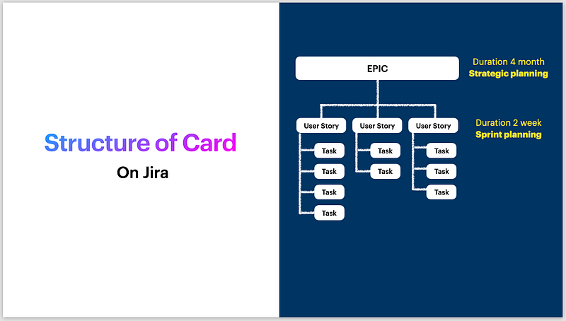
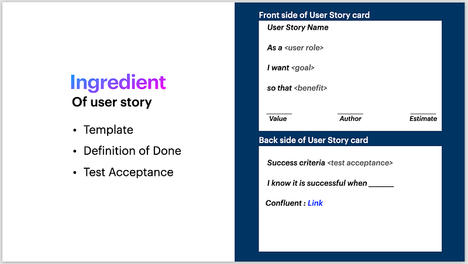
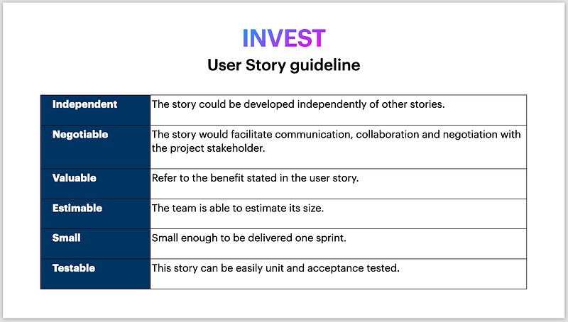

back to basic ~ user story
ทบทวนพื้นฐานในการทำ user story
กาลครั้งนึง ในปี 2023 ทีมได้ตกลงกันว่าจะขอใช้ Jira กับ Confluence ด้วยความวุ่นวายก่ายกองและไม่เปิดใจกับ Jira ของกิม จึงให้ทีมได้ทดลองใช้กันเองอย่างเสรี ซึ่งเห็นว่ามีน้องบางคนเคยใช้งานมาอยู่แล้ว ก็คลายใจ ไม่ได้กังวลนัก
ผลคือ ทีมมี 4 squad และ process การใช้ Jira และ Confluence ก็เสรีชนมากในแต่ละ squad ซึ่งจริงๆ ก็ไม่น่าจะมีปัญหาอะไรในมุมมองของกิม ที่พยายามปล่อยให้ทีมมีอิสระในการทำงาน
และแล้ว…..
เริ่มมีคำถาม จาก new joiner ว่า “พี่กิมคะใครต้องทำ user story กันนะ”
….ถือว่าเป็นคำถามดีๆ ค่ะ ที่ทำให้กิมอึ้งไปสักครู่นึง
ตอนได้ยิน ขอยอมรับว่ากิมตกใจ เอาล่ะสิ นี่ไม่ใช่แค่เรื่อง Jira และ Confluence อีกต่อไป พอเข้าไปคลุกวงในกับน้องๆ ก็พบว่า บาง squad มี BA ทำ user story ให้อย่างดี แต่บาง squad ก็ไม่มีเลย (แต่ทุก squad จำเป็นต้องมีช่วยกันทำเอกสาร API Specification และ design diagram ต่างๆ ไว้ใช้สื่อสารกัน แต่มันไม่พอแล้วล่ะ)
เริ่มต้น….ตั้งแก๊ง PO (ซึ่งประกอบไปด้วย BU Owner, BA และกิมเองค่ะ) เพื่อทะลายพื้นที่สีเทา (grey area) ว่าใครกันนะที่ต้องเขียน user story ส่งงานลงทีม dev
จากนั้นก็แต่งตั้ง BU Owner ให้ช่วยเปิด epic ให้ เพราะ BU Owner จะเป็นคนรับ requirement จากบ้านอื่นๆ จากนั้น BA จะไปหยิบ epic มาทำการเปิดการ์ดทำ user story และส่งงานลงทีมต่อไป
ในกรณีที่เป็นงาน IT improvement ก็จะเป็นหน้าที่ dev team มาเปิด epic ทิ้งไว้ค่ะ

ปรับพื้นฐานด้วยการแชร์ให้ทุกคนในทีมเห็นภาพส่วนประกอบของ user story ให้ตรงกัน ซึ่งกิมก็เล่าในส่ิงที่ทุกคนรู้อยู่แล้ว และก็ย้ำให้ทุกคนเห็นภาพให้ชัดเจนค่ะ
ซึ่งกิมแอบอธิบายการวางโครงให้ทีมทำเหมือนกันทุก squad คือ เราจะใช้ Jira ในการเปิดงานปิดงาน และใช้ Confluence ในการสร้างตำรับตำราต่างๆ เก็บเป็น knowledge กันค่ะ
และ Jira จะสามารถ linkage ไปที่ Confluence
และ Confluence จะสามารถ linkage กลับไปที่ Jira ได้เช่นกัน

จากรูป Ingredient of user story กิมหยิบสิ่งที่คิดว่าสำคัญมาเล่าค่ะ
1) Template
มีเล่าให้ทีมฟังสมัยยุคก่อนโควิด ที่ทีมได้ทำ physical card กัน เป็นกระดาษสีขาวแข็งๆ ขนาดเท่าฝ่ามือ, เขียนด้วยปากกา และเขียนอะไรลงไปบ้าง จากนั้นเราก็คุยกันว่า จะหยิบย้ายอะไรไปไว้ใน Jira card บ้าง ซึ่งเราก็ตกลงกันว่า จะคงมีทั้งหมด เว้นแค่ Author ที่มี login default stamp อยู่แล้ว ไม่ต้องใส่ในการ์ด และส่วนของ Estimate ก็มีจุดนับคะแนนใน Jira ให้ได้ใช้อยู่แล้ว ก็ไม่ต้องใส่ลงไปซ้ำซ้อนอีกค่ะ
2) Definition of Done (DoD)
จุดนี้กิมมีขอทีมไปทำการบ้านล่วงหน้าก่อนหน้าที่จะมาเล่าให้ทีมฟัง ซึ่งตอนไปทำการบ้าน ก็มีไปรบกวนขอปรึกษาพี่หน่องโปรแกรมเมอร์สายลำซิ่ง เทคโค้ชของพวกเรา และพี่เอกทีม transformation เพื่อให้ได้ของแบบไม่ฟุ้งๆ มาเล่าให้ทีมฟังค่ะ
พอคุยกับทีม เราก็สรุปแนวทาง DoD ของทีมได้ว่า ของบางชิ้นเราก็เสียดายเวลา อาจจะไม่ต้อง deploy on SIT-ENV เหมือนชิ้นอื่นๆ ก็ได้ และเราสามารถทำได้สุดที่ dev ใน sprint นี้ ก็ได้ด้วย ซึ่งเราก็จะเขียนไว้ที่ Jira card เลยว่า task นี้เราจะ “I know it is successful when …..” ตามตกลงด้วยอะไรค่ะ
3) Test Acceptance
อาจเรียกได้ว่า Success criteria สำหรับของที่ทีมจะ deliver และทีมสามารถช่วยกันทำความเข้าใจ สรุปความเข้าใจ เขียนออกมาร่วมกันได้นะคะ ที่กิมเคยเห็น ก็จะมีการเขียนในรูปแบบ bullet หรืออาจเป็นรูปภาพ UI ก็ยังได้ค่ะ

ปิดจบการเล่าด้วย I~N~V~E~S~T user story guildeline ที่เราๆ ได้ถ่ายทอดต่อๆ กันมา
1. Independent การ์ดแต่ละใบต้องเป็นอิสระในตัวเอง หยิบไปทำได้แบบไม่ผูกติดกับใบอื่น
2. Negotiable การ์ดต้องสามารถใช้สื่อสารในทีม และต่อรองกันได้ระหว่าง PO และ Dev
3. Valuable มีคุณค่า มี business value
4. Estimable ต้องสามารถนำไปใช้ประเมิน sizing ในการ deliver ได้
5. Small ต้องเล็กกกกก พอที่จะ deliver ได้ใน 1 sprint
6. Testable ต้องสามารถนำไปทดสอบได้ ก็จะ relate กับการ deliver test acceptance ค่ะ
ขอให้สนุกกับการอ่านนะคะ ขอบคุณค่ะ